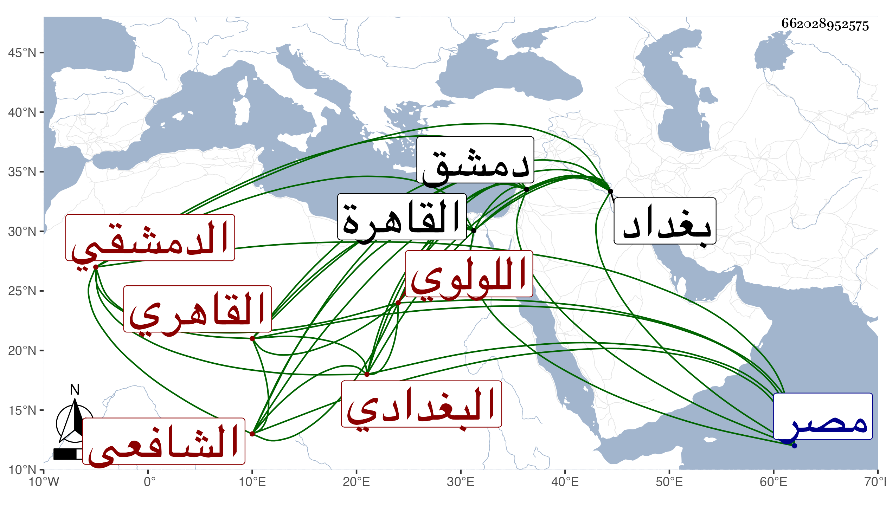

0902Sakhawi.DawLamic.ITO20230111-ara1.EIS1600.662028952575
Biography ID: 662028952575
154
أحمد بن عمر بن علي بن عبد الصمد بن أبي البدر الشهاب أبو العباس البغدادي ثم الدمشقي القاهري الشافعي ويعرف بالجوهري وربما نسبه شيخنا اللولوي وقد يقال اللال . ولد سنة خمس وعشرين وسبعمائة ببغداد وقدم مع أبيه وعمه دمشق فأسمع بها من المزي والذهبي وداود بن العطار وآخرين ، وقدم القاهرة فاستوطنها وسمع فيها من الشرف بن عسكر وحدث بها وبمصر بسنن ابن ماجه وغيره غير مرة أخذ عنه الأكابر كشيخنا وقال أنه كان شيخا وقورا ساكنا حسن الهيئة محبا في الحديث وأهله عارفا بصناعته جميل المذاكرة به على سمت الصوفية ولديه فوائد مع المروءة التامة والخير ومحبة التواجد في السماع والمعرفة التامة بصنف الجوهر . مات في ربيع الأول سنة تسع وقد تغير ذهنه قليلا . قلت وقد أثنى عليه المقريزي في عقوده وساق عنه حكايات تأخر بعض من حضر عليه وأجاز له إلى قريب التسعين .
